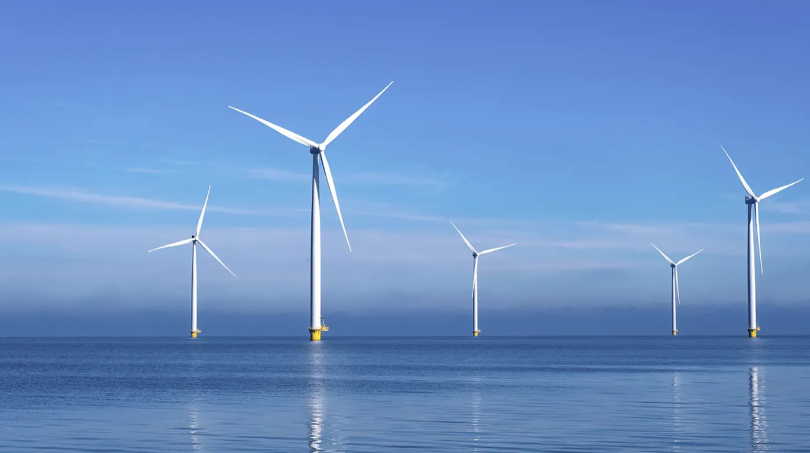

SectorsEnergy
Energy
An industry like no other.
Almost three decades taking accountability, and taking away pressure, for some of the industry’s most integral organisations.

Section 7, look and feel. “Photography of real employees (not stock or AI).” The live Energy sector page opens on a stock photograph of a model in hi-vis holding a tablet. It is the one page in this set where the brief and the current site disagree outright, so this page carries their own documentary library instead and says less rather than borrowing a picture of somebody else’s industry.
Why energy
The safety critical environment. The national infrastructure pressure. And the consequences if things go wrong.
Combined with the fast pace of change and the quickening shift towards renewables, this only emphasises the need to know you can truly trust the resilience of your technology infrastructure. Not to mention your technology partner.

Section 8, usability. “We will need some agreed templates for key pages (eg – Services pages, and also Sector pages) which can be replicated.” This page is the replication. Every component on it already exists on the Cyber page: the margin index, the reusable list, the proof strip, the client marks and the enquiry form. No new CSS class was written to build it, and a check asserts that rather than leaving it as a claim.
- Technology services Infrastructure, connectivity, workplace systems, and 24/7 managed IT we will take off your hands.
- Data and AI services Software development, automation, and AI your people will actually use rather than quietly avoid.
- Cyber security services Audits, detection and response, penetration testing and certification, with a 24/7 CREST certified SOC.
- Business consulting services A fresh pair of eyes, so you can step back, untangle the options and make a clear decision.
End to end
End-to-end energy expertise.
Helping clients not only to meet regulatory compliance, but to drive higher standards in systems, safety and resilience, becoming a benchmark that pushes the industry forwards.
Whether we are working with organisations in a period of transformation, optimising their efficiency and productivity, or enabling the continued improvement of their processes, we create uniquely tailored technology solutions that help our energy sector clients work more smartly, more securely, and more safely.
Section 6, clients. “Logos, case studies, testimonials, and clear examples (metrics over long narrative).” The named quote and the two client marks are both from their own Energy page, and the marks sit as issued rather than recoloured to suit the palette.
Proof
"Working in partnership with Waterstons, the Nutanix solution implemented gives Enva the benefit of greatly reduced risk, better recoverability, and greater scalability and flexibility as we continue to grow."


Section 5, objectives. “Take that awareness and interest and, via trust and credibility, turn it into persuasion… it may also be part of due diligence.” Four worked examples, each labelled with the service that delivered it and the client it was for, so a reader doing due diligence can see the shape of the work rather than a claim about it.
Work
- Building a resilient platform for growth Technology Consulting · Enva A Nutanix platform giving greatly reduced risk, better recoverability, and the scalability to keep growing into.
- Lean and mean risk and incident management Bespoke Software · Energy A replacement system built to a strict timescale, cutting cost and improving on what came before.
- Delivering project management as a service Project Management · VARO Several technology improvement projects run in a short timeframe, to build efficiency and resilience.
- Implementing processes that deliver results Managed Services · Enva A relationship founded on shared ambition, where there is always someone available to talk it through.
Section 3, target audience. Visitors arrive “from organic and paid search results; or from word-of-mouth recommendations” rather than the front door, so this page names its parent above its title, carries a breadcrumb, and points sideways into the thought leadership a reader may have arrived from.
Reading
- CAF 4.0 summer 2025 release, what is new? August 2025 · Max Muir The NCSC reviews the CAF every 12 to 24 months. Version 4.0 landed on 6 August 2025.
- Demystifying the Cyber Assessment Framework April 2025 Frameworks can be a minefield of jargon. The CAF is not just another acronym to file away and forget.
Contact
Tell us what is worrying you.
You will get a reply from someone who knows the sector, not a sales sequence. If we do not think we can help, we will say so.